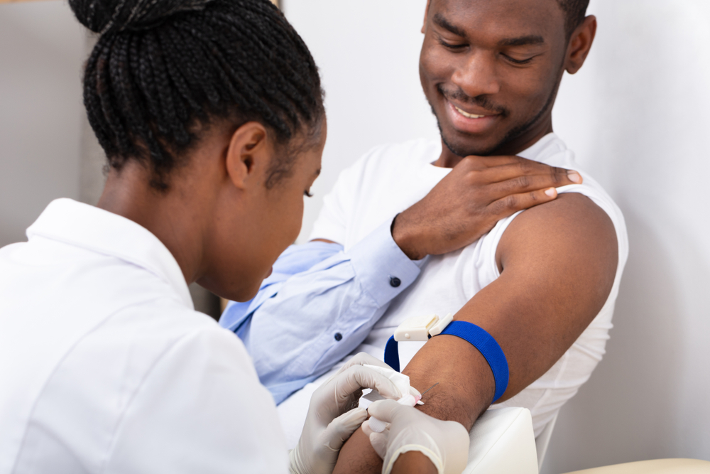
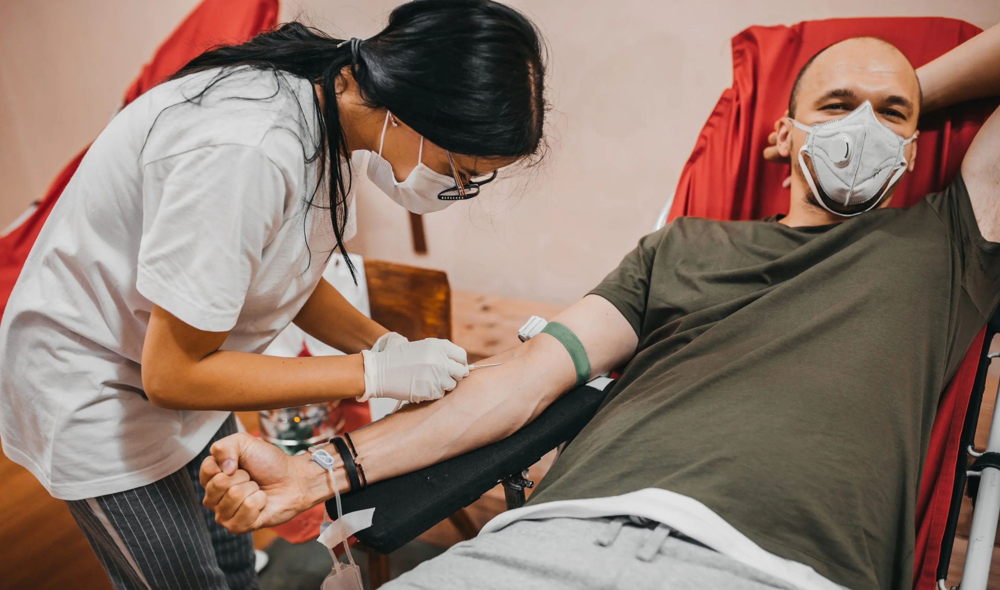
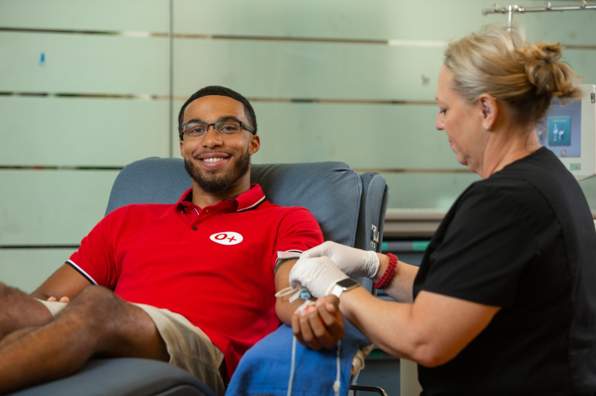
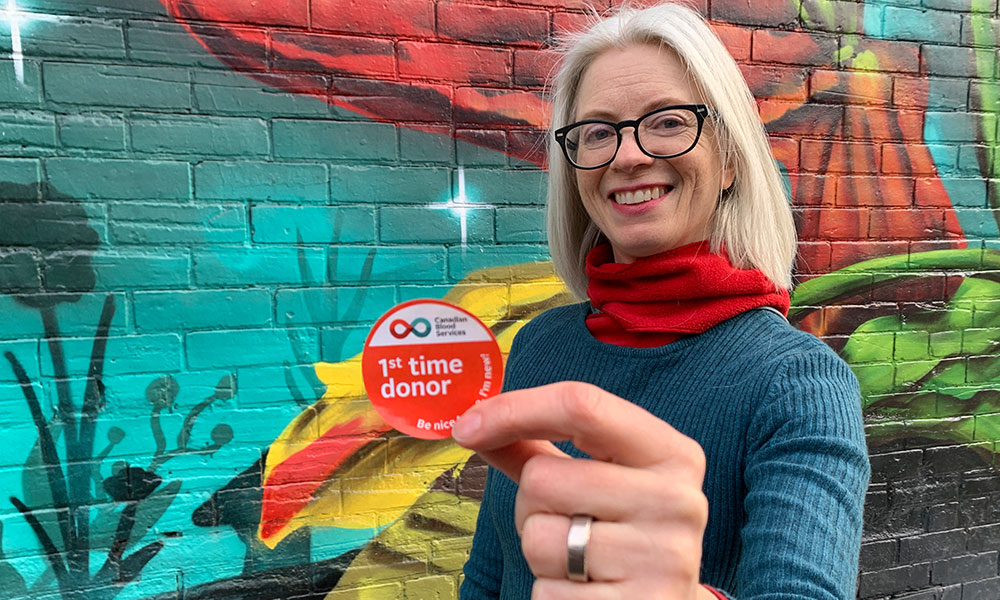

HEALTHY BLOOD GOOD FOR BETTER HEALTH
Requirements for blood donation
To ensure the safety of both patients and donors, these are someof the requirements donors must meet to be eligible to donate blood based on their donation type. To explore a list of eligibility information
AGE
- Typically, donors need to be within a certain age range. In many places, individuals between the ages of 17 and 65 are eligible to donate. Some countries may have different age limits, and there may be variations for first-time donors.
WEIGHT
- Donors often need to meet a minimum weight requirement, usually around 50 kilograms (110 pounds). This helps ensure the donor's well-being and reduces the risk of adverse effects due to blood loss.


HEALTH
- Donors should be in good health on the day of donation. They should not have any acute illnesses, infections, or conditions that might affect the safety of the donor or the quality of the donated blood.
MEDICAL HISTORY
-Donors typically undergo a brief medical history review to assess any risk factors or conditions that might affect the suitability of their blood for donation. It's important to provide accurate information about your health and any medications you may be taking.

TRAVEL HISTORY
- Some locations may have restrictions based on recent travel, especially to areas with a higher risk of certain infections or diseases. This is to ensure the safety of the blood supply.
Lifestyle and Behaviors
- Certain lifestyle factors or behaviors, such as recent drug use or high-risk sexual activity, may affect eligibility. Honest and accurate reporting is crucial for the safety of both the donor and the recipient.
